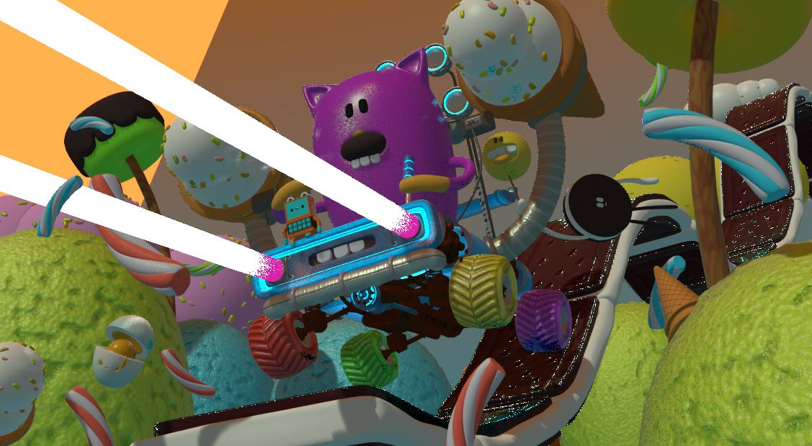

Lesson 6: Render a still image
What rendering does
A render takes the view from a camera, adds light, and makes a finished picture. The 3D view you have been working in is a workspace. A render is the result you can share.

Image: Blender Manual by the Blender Documentation Team, licensed under CC BY-SA 4.0. Shared unchanged.
Steps
- Tool Open your block stand file from Lesson 2. If you don't have it, use any simple object.
- Key Press 0 (top row, with Emulate Numpad on from Lesson 0) to look through the camera. unverified on your Mac The view should show your objects. If not, use the camera tools in the 3D View later.
- In the Properties panel, click the Render tab. unverified icon position for 5.2.1
- Find Render Engine and choose EEVEE. EEVEE is the fast option for a Mac Mini. unverified default on 5.2.1
- In the top bar, choose Render > Render Image. A new window opens and fills in. unverified menu name
- Check The picture shows your objects with light and shadow.
- In the render window, choose Image > Save As. Pick PNG, name it
stand-render.png, and save it. unverified menu name
If the render looks dark or empty: the camera may be pointed at nothing. Move your objects into the middle of the view, then render again.
Project: your first render
Render your block stand and save it as a PNG. Keep the file. You will render it again after Lesson 9, so you can see the difference color makes.
stand-render.png. The image is the picture; the 3D file is still saved separately.